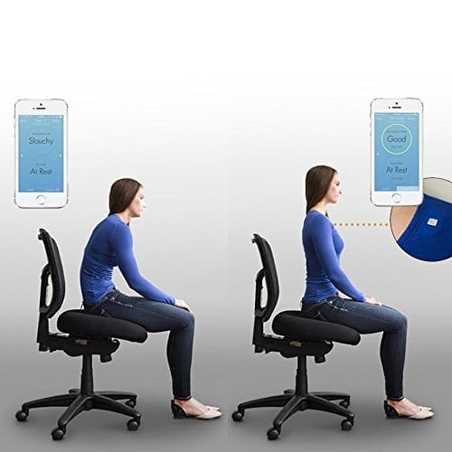

For fans
- This app is basically an app that tells you news,scores and any information you want to know about any sport you like.
- This appThis app tells you about the latest sport news that any fan would want to know.
- This website This website is basically telling you a lot of different highly rated Sports Management Softwares, And for me the one that i have heard of a lot is sportsengine.
- Tracking scores
- Increasing engagement by fans
- Analyzing the validity of plays and goals by fans
The benefits of using Apps and websites :
Wearable devices
- An example of a Wearable device that helps athletes is Lumo Lift which is a very helpful device that almost every athlete uses, it is a device that automatically straightens up your back so it doesn’t have a bad position when you grow up. 
- The XMetrics Pro Swim Tracker helps swimmers that allows you to focus on your swimming without being distracted by keeping track of timing and laps.

Benefits of Sports Wearable devices
- Improved performance
- Low injury risk
- Improved coaching
- Improved health